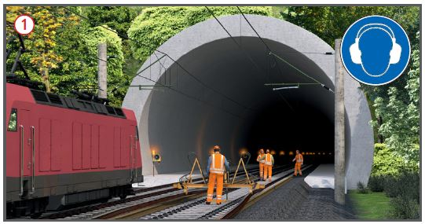

Gleisbauarbeiten im Eisenbahntunnel
|
|

Gefährdungen
- Gefährdungen für Personen bestehen insbesondere durch:
- bewegte Schienenfahrzeuge (Zugfahrten in Betriebsgleisen, Fahrzeugbewegungen im Arbeitsgleis),
- Fahrleitungsanlagen,
- Grenzwertüberschreitungen von Gefahrstoffen durch eingesetzte Fahrzeuge, Maschinen und Arbeitsverfahren oder bereits vor Baubeginn vorhandenen Gefahrstoffen.
Allgemeines
- Aufgrund der Besonderheiten bei Arbeiten in Tunneln kommt der Bauherren-/Bahnbetreiberverantwortung besondere Bedeutung zu. Bereits in der Vorbereitungsphase sind Festlegungen zum Arbeits- und Gesundheitsschutz zu treffen in Abhängigkeit von:
- der Art der auszuführenden Arbeiten,
- der eingesetzten Fahrzeuge/Maschine/Geräte,
- der Tunnelgeometrie und
- der Baustellen- und Umgebungsbedingungen.
- Bestellung eines fachkundigen Koordinators nach BaustellV.
- Frühestmögliche Abstimmung mit den zuständigen Behörden und Organisationen mit Sicherheitsaufgaben (BOS), z. B. Feuerwehr.
- Erstellung von Konzepten, die Grundlage der Organisation des Arbeitsschutzes und der Unterweisungen sind, z. B.: Notfallkonzepte, Bewetterung.
- Bei Arbeiten ohne Einstellung des Bahnbetriebs sind die Festlegungen des Bahnbetreibers für in Betrieb befindliche Tunnel zu beachten (DB Netz AG: Betrieblicher Alarm- und Gefahrenabwehrplan). Diese gelten in der Regel nicht für totalgesperrte Tunnel während der Bauphase.
Schutzmaßnahmen
-
Festlegungen aus Unfallverhütungsvorschriften und des Bahnbetreibers beachten, hier für DB Netz AG:
Zugfahrten in Betriebsgleisen
- Bei Arbeiten im Tunnel soll das Arbeitsgleis im Regelfall gesperrt sein.
- Die Sicherung gegenüber dem Bahnbetrieb im Nachbargleis wird von der für den Bahnbetrieb zuständigen Stelle (BzS) festgelegt.
- Geschwindigkeit im Nachbargleis bei Arbeiten in Tunneln ohne Nischen:
- max. 120 km/h: bei Zugfahrt
im Nachbargleis
 möglichst weit vom Gleisbereich des benachbarten Gleises zurücktreten,
möglichst weit vom Gleisbereich des benachbarten Gleises zurücktreten,
- max. 160 km/h: Arbeit bei Warnung unterbrechen und an die Tunnelwand des gesperrten Arbeitsgleises stellen.
- Nachbargleis und Randweg des Nachbargleises nicht betreten.
- Nachbargleis vor dem Tunnelportal nur mit Sicherungsmaßnahme
queren.
Fahrzeugbewegung im Arbeitsgleis
- Schienenfahrzeuge dürfen nicht bewegt werden, wenn kein durchgehender Randweg vorhanden ist und im Nachbargleis eine Zugfahrt stattfindet.
- Nahbereiche vor/hinter Schienenfahrzeugen durch direkte oder indirekte Sicht (z. B. Kamera-Monitor-System) überwachen.
Bei Bewegung von Erdbaumaschinen und Baustellenfahrzeugen
- Erdbaumaschinen und Fahrzeuge mit Rückraumüberwachung ausrüsten, z. B. Kamera-Monitor-System, Sichtfeldanforderungen beachten.
- Arbeitsbereiche von Maschinen
und Beschäftigten räumlich und zeitlich trennen.
Arbeiten unter Fahrleitungsanlagen
- Hebezeuge (Zweiwegebagger, Anbaukrane) nur unter abgeschalteter Fahrleitungsanlage einsetzen.
- Nur bahntechnisch unterwiesenes Personal einsetzen, Schutzabstand bei 15kV mind. 1,5 m.
- Arbeiten auf hochliegenden Standorten (z. B. Turmtriebwagen) nur bei ausgeschalteter und geerdeter Fahrleitungsanlage durchführen.
Gefahrstoffe in Tunnelatmosphäre
- Gefährdungen entstehen durch Freisetzung von Gefahrstoffen (z. B. Abgase von Dieselmotoren, Staub aus Schotterbewegung). Diese Gefährdungen werden durch unzureichende natürliche Durchlüftung, z.B. in Senken und Kuppen, begünstigt.
- Bewetterungskonzept fachkundig erstellen und umsetzen, dabei beachten:
- kein Ansatz natürlicher Durchlüftung,
- mehrere Lüfterebenen einrichten (z.B. auf Randweg) oder mitführen (z. B. auf Eisenbahnwagen),
- Arbeitsrichtung so planen, dass sich die Hauptemittenten abluftseitig befinden,
- nur eine stauberzeugende Bauspitze gleichzeitig im Tunnel einsetzen.
- Schubkraftreserve der Bewetterungsanlage mind. 25 %,
- mittlere Luftgeschwindigkeit: 1,3 – 1,5 m/s (ohne Schotterbewegung), 1,8 – 2,1 m/s (mit Schotterbewegung),
- Luftzufuhr mindestens: je kW Dieselmotorleistung 4 m3/min und je Beschäftigtem 2 m3/min unter Beachtung des gleichzeitigen Einsatzes und Teillastfaktoren der Motoren,
- Steuerung der Anlage durch fachkundigen Bewetterungsbeauftragen.
- Baumaschinen/Eisenbahnfahrzeuge:
- möglichst emissionsfreie Antriebstechniken einsetzen (z. B. Elektro-, Akkuantrieb),
- Dieselmotoren nach Stand der Technik mit Abgasnachbehandlungssystemen ausrüsten (Dieselpartikelfilter (BAFU-/VERT-Filterliste), DeNOx-System),
- Straßenzugelassene Fahrzeuge mind. Abgasnorm Euro 5.
- Einsatz von Kleinmaschinen:
- Kleinmaschinen mit elektrischem/Akku-Antrieb oder Dieselantrieb mit Dieselpartikelfilter einsetzen,
- wenn benzinbetriebene Handmaschinen unvermeidbar sind, Motoren mit Katalysator, alternativ neuester Motorengeneration einsetzen.
- Durchführung von Messungen:
- Atmosphäre an Arbeitsplätzen durch Mehrfach-Gasmessgeräte überwachen (Sauerstoff, Kohlenmonoxid, Kohlendioxid, Stickoxide),
- Staubmessung fotometrisch/gravimetrisch,
- bei Einsatz von Benzinmotoren: jeden Maschinenbediener mit personengetragenem CO-Messgerät mit Alarmausgabe ausrüsten,
- mittlere Luftgeschwindigkeit im Tunnel messen und dokumentieren.
- Stromaggregate gemäß Minimierungsgebot möglichst außerhalb des Tunnels aufstellen (keine Abgase in die Tunnelatmosphäre einleiten).
- Bei jeder Schotterbewegung möglichst Staub vermeiden durch:
- vollständige Bewässerung des Gleisschotters bis Aushubplanum (Richtwert 20 – 30 l/m2 Gleisfläche),
- Bewässerung des Neuschotters vor/während Entladung (Richtwert 10 l/to),
- Einsatz einer Absauganlage bei Bettungsreinigungsmaschinen,
- Einsatz alternativer Staubminderungsmaßnahmen,
- Einsatz von Personen wenn möglich nur zuluftseitig,
- Atemschutz als ergänzende Maßnahme (Partikelfilter mind. P2).
Zusätzliche Hinweise für Konzepte
Brandschutz
- Kraftstoff und Flüssiggas im Tunnel auf die Mengen begrenzen, die für die Arbeiten erforderlich sind, keine Lagerung im Tunnel.
- Bei Flüssiggas keine Entnahme aus der flüssigen Phase im Tunnel.
- Tanken von Kraftstoffen außerhalb des Tunnels.
- Brandschutzmaßnahmen vorbereiten (Entstehungsbrandbekämpfung durch Feuerlöscher an Arbeitsstellen, Meldeeinrichtungen, erforderlichenfalls Rettungszug mit Löscheinrichtungen vorhalten).
- Benennung von ausgebildeten Brandschutzhelfern.
Beleuchtung
- Mindestbeleuchtungsstärken für Verkehrswege (10 lx) und Arbeitsstellen (50 lx) einhalten.
- Sicherheitsbeleuchtung (1 lx, mind. 60 min) bei Ausfall der vorhandenen Beleuchtung erforderlich.
- Flucht- und Rettungswege beleuchten, inkl. Beschilderung.
- Vor Arbeitsbeginn prüfen, ob vorhandene Tunnelbeleuchtung ausreichend.
Notfallmaßnahmen
- Lotsen- und Sammelpunkte festlegen.
- Personalzugangsregelungen treffen (z.B. Transponder).
- Verständigungsmöglichkeit für Notruf aus dem Tunnel sicherstellen.
- Anfahrt für Rettungsdienst zum Tunnelportal und Transportmöglichkeit für Verletzte aus dem Tunnel sicherstellen.
- Evakuierung aller Personen sicherstellen.
- Einweisung in die für Gleisbau- bzw. Bauarbeiten im Tunnel erforderlichen Schutzmaßnahmen.
07/2021